Hago cosas. Algunas funcionan.
Soy Joaquín Álvarez Mercado, de México. Lo que ves aquí es lo que he creado: un movimiento ambiental, videos sobre negocios y páginas web.
Medio ambiente
Acuña Sin Huella
Un movimiento ambiental que cofundé en Ciudad Acuña.
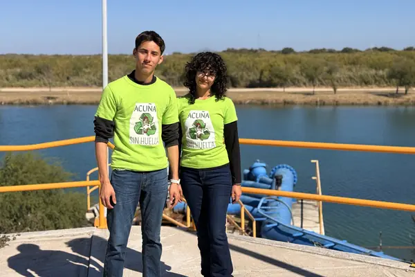
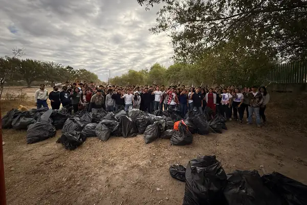
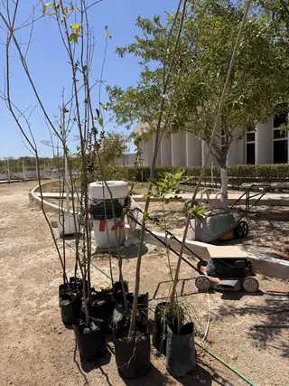
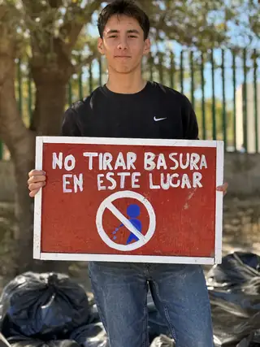
- Más de 50 voluntarios y más de 44 bolsas de basura en dos jornadas de limpieza.
- Cambiamos 1,300 botellas de plástico por 13 árboles plantados en el campus, con el Departamento de Ecología del municipio.
- Pláticas sobre el cuidado del agua en 3 secundarias, junto con el Museo del Agua.
Contenido
Hablemos de Negocios
Videos de un minuto que explican cómo funciona un negocio real. Ahora los grabo desde India.
- Trisol
- KidZania
- Kavak
- Clip
- theory11
Hablemos de negocios.
Cada episodio empieza igual.
- Los 5 videos suman 1.4 millones de vistas entre TikTok e Instagram.
- El de Trisol pasó solo 1.1 millones, con una cuenta de 3,000 seguidores. En el Creator Lab lo dejaron de tarea: hacer un video con mi estilo.
Todos siguen la misma fórmula de 7 bloques
- Hook de dato
- ¿Pero cómo funcionó?
- Fundador con fricción
- Funcionó porque…
- Insight
- Resumen circular
- Cierre
Diseño web
Páginas web
Diseño y hago páginas que se entienden en segundos, sobre todo en el teléfono.
- Mi enfoque: primero el diseño y la experiencia de usuario.
- Todas funcionan igual de bien en el teléfono que en la computadora.
- También he diseñado la experiencia de usuario de .
Ahora
- Estudiando en TETR College, en India.
- Haciendo contenido sobre negocios y la escuela.
- Lanzando algún negocio por aquí y por allá.
-
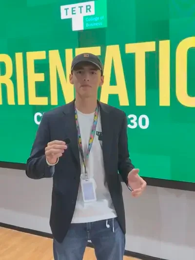
Los primeros días
-
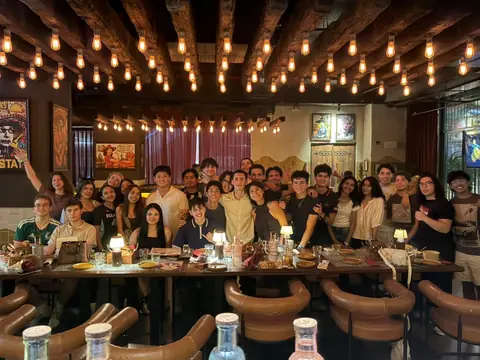
Mi generación de TETR
-
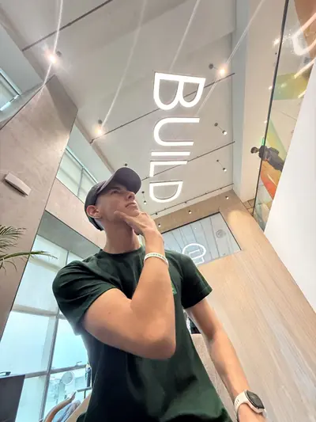
Construye algo grande
-
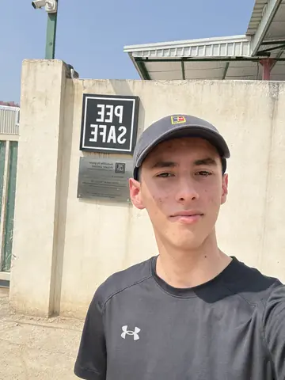
Conectando con marcas
-
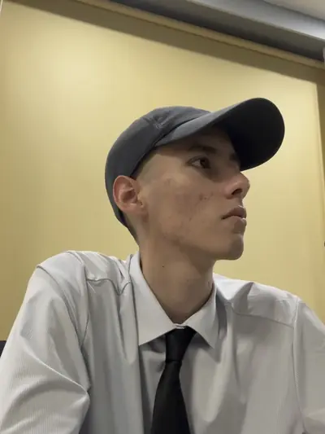
A trabajar
-
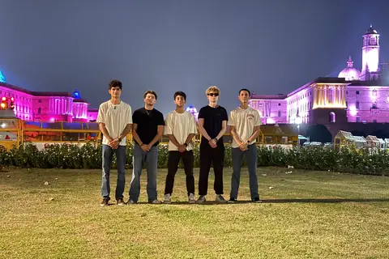
Nueva Delhi, de noche
-
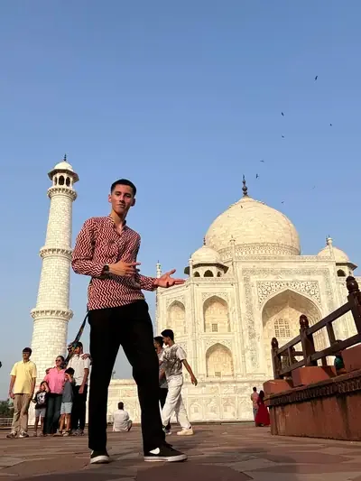
Taj Mahal, Agra
-
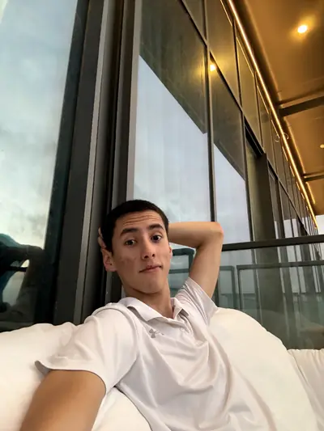
Un descanso
-
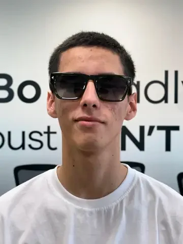
Siempre con estilo
-
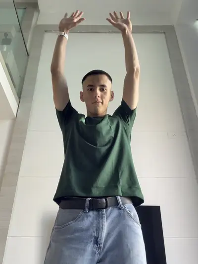
Da lo mejor de ti
Contacto
Hablemos.
Si algo de aquí te dio curiosidad o necesitas una página, escríbeme. Contesto yo.
Estoy en India.
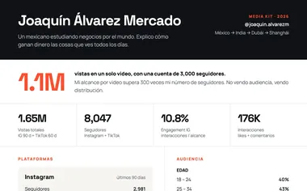
Mi media kit 1.65 M de vistas · 8,047 seguidores · 10.8% de engagement Ver el media kit